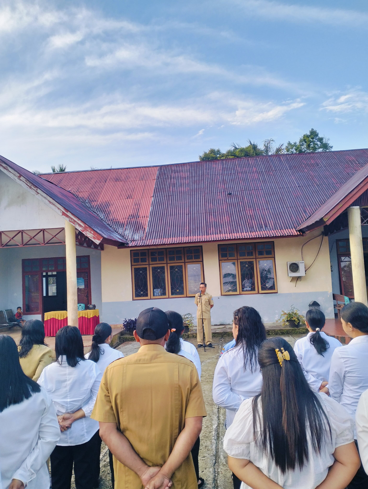
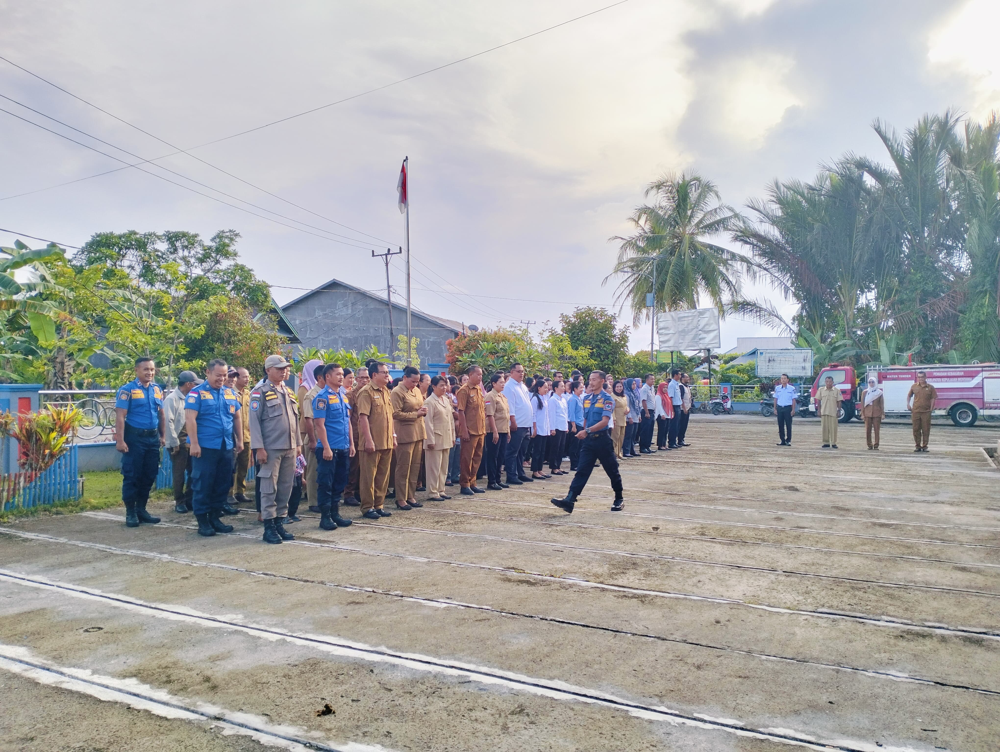
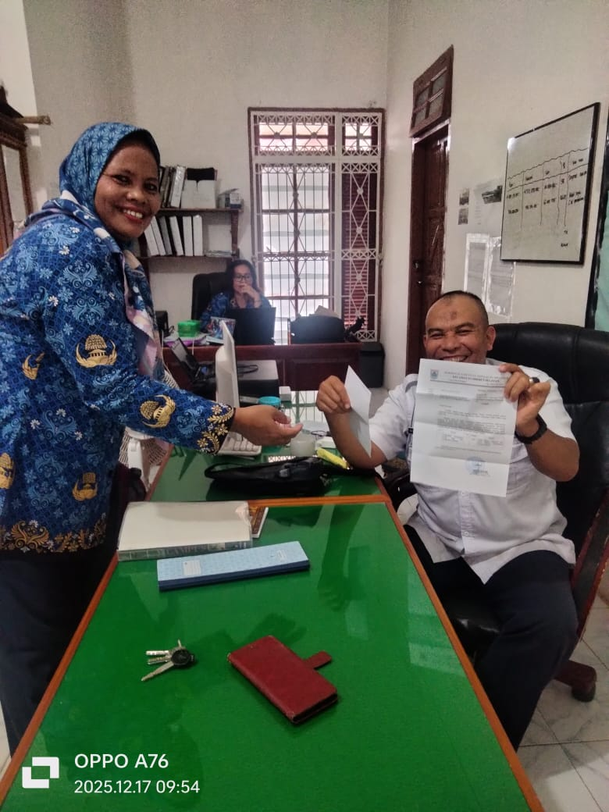
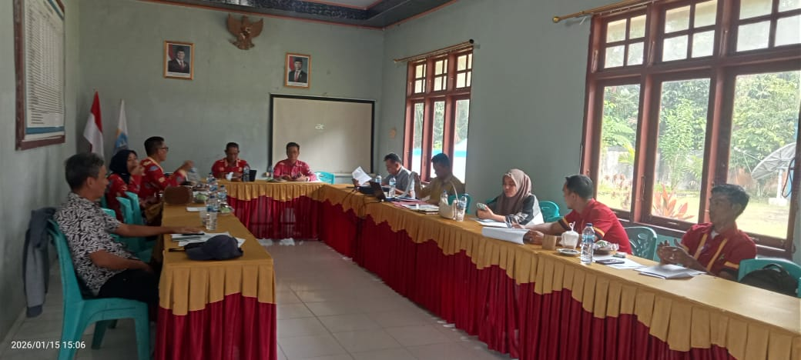

9 Februari 2026

10 Agustus 2025

5 Agustus 2023

1 Agustus 2023

Kunjungan Kerja Bupati
Kunjungan kerja Bupati Kepulauan Mentawai ke Kecamatan Siberut Selatan
28 Juli 2023
Pelatihan Aparatur Desa
Pelatihan peningkatan kapasitas aparatur desa di kantor kecamatan
25 Juli 2023
Kegiatan Posyandu Lansia
Pelayanan kesehatan lansia di Posyandu Desa Maileppet
20 Juli 2023
Peresmian Ruang Kelas Baru
Peresmian ruang kelas baru SDN 12 Siberut Selatan
15 Juli 2023